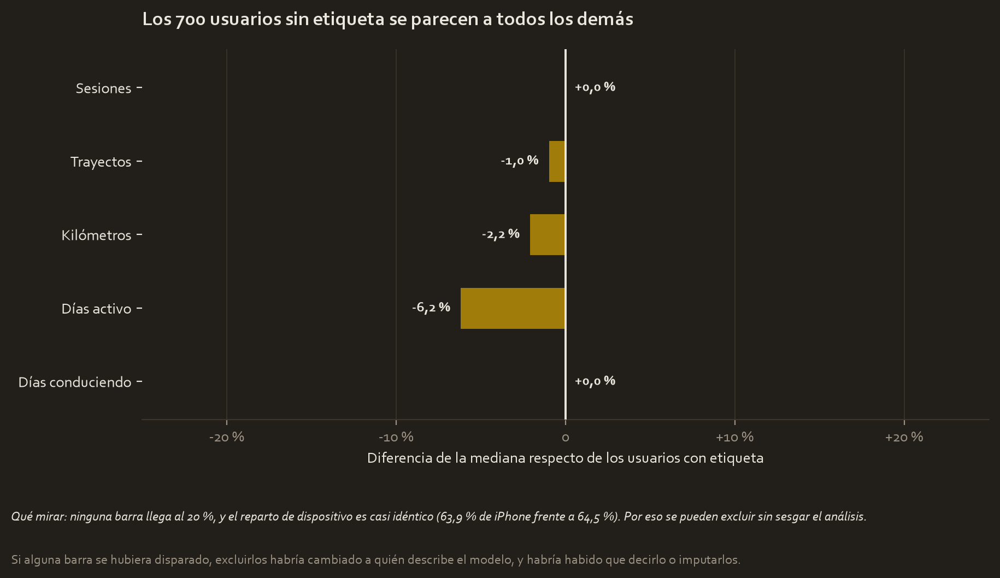
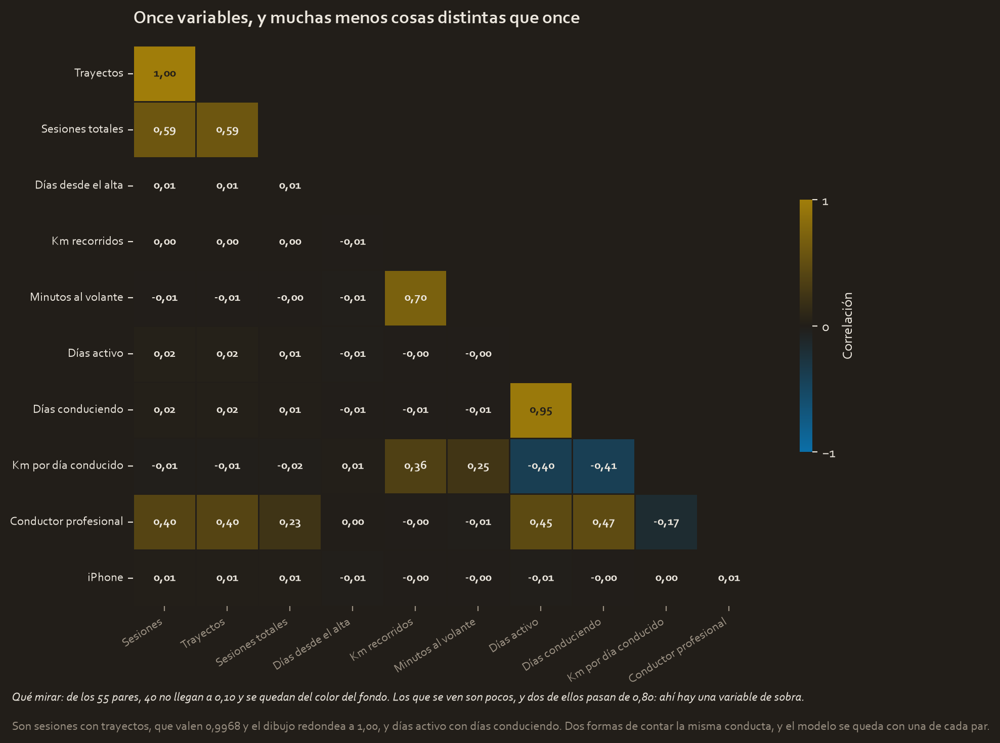
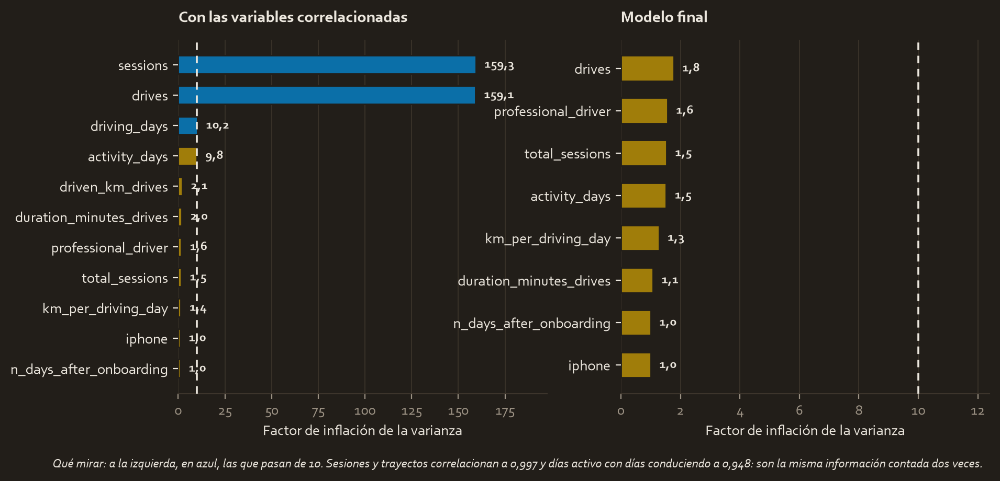
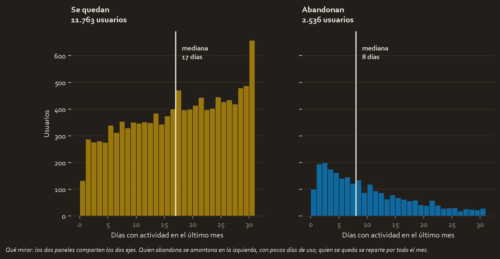
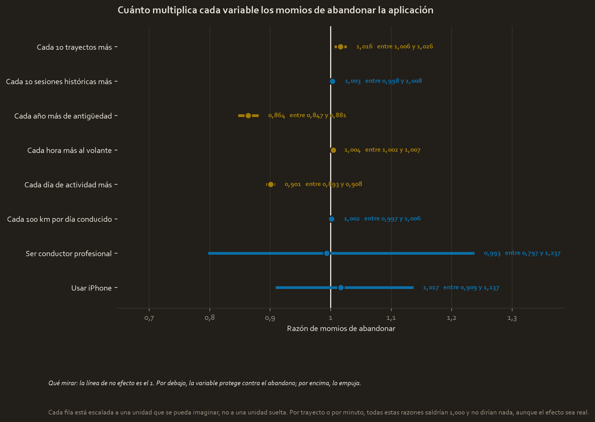
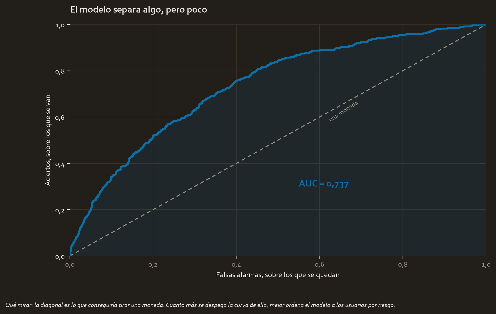

The brief
Waze wants to grow, and for that it needs people not to leave. The brief is a model that flags who is about to abandon the app, so as to act before they do.
It is the same scenario as Course 3, where the question was whether the kind of phone influenced how much the app gets used and the answer was no. Now the question is more ambitious.
The question
Can you tell who is going to abandon the app by looking at how they use it?
And an expectation, written before fitting anything precisely so it cannot be adjusted afterwards: only 17.74% of users churn, the available variables describe behaviour and not causes, and there is not a single piece of data in the file about why anyone left. The likely thing is that the model lets most of those who leave escape. If that happens, it gets reported as a result.
It happened.
The data
waze_dataset.csv, 14,999 users and 13 columns. Synthetic data created by Waze for the certificate. The variable to predict is label: churned or stayed.
What had to be fixed
700 users have no label, 4.7%. Throwing them out without looking would be a mistake: excluding a group is only harmless if that group resembles the rest.

The largest difference in medians is 6.2%, and the device split is practically identical: 63.9% iPhone among those without a label against 64.5% among the rest. They can be excluded without biasing anything. 14,299 users remain, of whom 2,536 churn.
A hidden division by zero. 983 users drove zero days. Calculating kilometres per driving day on them gives infinity, which enters the model without warning and breaks the fit. Since they did not drive at all, their ratio is zero.
Multicollinearity, and here it is serious.

Of the 55 pairs of variables, 40 do not reach 0.10: almost nothing has to do with almost anything. What shows is a few pairs, and two of them give away a redundant variable.
Sessions and drives correlate at 0.997, and active days with driving days at 0.948. Translated into the number that decides:

Their variance inflation factors are 159.3 and 159.1, far above the threshold of 10: they are the same information counted twice. Drives and active days stay. In the final model no variable goes past 1.8.
What the exploration showed

Whoever churns has a median of 8 days of activity in the last month. Whoever stays, 17. The two panels share both axes, so the heights can be compared: those who leave crowd on the left and those who stay spread across the whole month.
And a piece of the exploration that later turns out to be a trap: the 2,488 professional drivers (60 or more drives in 15 or more days) churn at 7.56% against 19.88% for the rest. It looks like the best predictor in the file.
The model, and why this model
The variable to predict is a yes or a no, so binomial logistic, fitted on 10,724 users with 3,575 held out.

The coefficients are scaled to units that can be pictured. Per single unit almost all of them come out 1.000 with an interval from 1.000 to 1.000, even though their p-value is 3e-48: the problem is the unit, not the effect. One day out of two thousand since sign-up moves nothing; a year does.
| Variable | Odds ratio | p |
|---|---|---|
| Each extra year of tenure | 0.864 | 3.09e-48 |
| Each extra day of activity | 0.901 | 5.03e-139 |
| Each 10 extra drives | 1.016 | 0.00132 |
| Each extra hour at the wheel | 1.004 | 9.46e-05 |
| Each 10 historical sessions | 1.003 | 0.247 |
| Each 100 km per driving day | 1.002 | 0.497 |
| Using iPhone | 1.017 | 0.773 |
| Being a professional driver | 0.993 | 0.952 |
Two readings worth the whole case.
The professional driver disappears. Raw, they churned at less than half the rate of the rest; inside the model their odds ratio is 0.993 with a p of 0.952, that is nothing. The explanation is the one of module 3: the activity days already captured that effect, and being professional added nothing of its own. It was a confounding variable disguised as a finding.
The device does not matter either, with a p of 0.773. It is exactly the same conclusion the Course 3 project reached with a t-test, now controlling for seven other variables at once. The two courses agree.
The assumptions, one by one
| Assumption | Status |
|---|---|
| Binary outcome | Holds: churns or stays |
| Independent observations | Reasonable: different users |
| No multicollinearity | Holds after removing three variables, maximum 1.8 |
| Linearity in the logit | Acceptable, though not checked variable by variable |
The last one is declared with its caveat instead of taken as given: it was not checked with partial logit plots for each continuous variable, which would be the rigorous thing.
The result, translated
On 3,575 test users, with the default threshold:
| Metric | Value |
|---|---|
| Accuracy | 0.823 |
| Precision | 0.505 |
| Recall | 0.082 |
| F1 | 0.141 |
582 of the 634 users who churn escape it. And that 82.3% accuracy is almost exactly what would be achieved by always answering "stays", which would be right 82.26% of the time.
But the model is not useless, and the distinction is the case:

Its AUC is 0.737, so it ranks users by risk quite a bit better than chance. What is wrong is not the model, it is where the cut is placed.
| Threshold | Alerts | Detects | Right |
|---|---|---|---|
| 0.50 | 103 | 52 of 634 | 50.5% |
| 0.30 | 725 | 279 of 634 | 38.5% |
| 0.20 | 1,262 | 395 of 634 (62.3%) | 31.3% |
What gets decided with this
- Lower the threshold to 0.20, and measure the real cost of a false alarm before fixing it for good. It goes from detecting 52 at-risk users to detecting 395.
- Aim retention at the new and low-activity user, which is where the two demonstrated effects are.
- Do not segment by professional driver. Their apparent advantage is explained by the activity days, which are already being measured.
- Start recording why people leave. It is the underlying limitation, and no model fixes it from the inside.
Limitations
- The pseudo R² is 0.1348: the model explains a small part of what happens.
- The file contains no cause of churn, only behaviour. With this data you detect who is disengaging, not why.
- 700 users without a label were excluded after checking that they resemble the rest. Had that not been so, it would have changed whom the model describes.
- The 983 users with zero driving days carry a kilometres ratio fixed at zero instead of infinity. It is defensible and it is worth knowing that it was decided.
- The data is synthetic.
Full material
These three projects did not exist: they were built here. The CSVs are read from your Course 3 folder without touching them, and everything else is new.
Reports and notes
- pace_plan.md 04_reports/pace_plan.md 4.9 KB
- executive_summary.md 04_reports/executive_summary.md 3.8 KB
- model_results.json 04_reports/model_results.json 5.0 KB
Code
- waze_logistic.py 02_scripts/waze_logistic.py 29.5 KB
- waze_curso4.ipynb waze_curso4.ipynb 16.1 KB